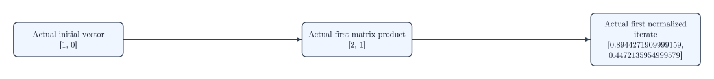
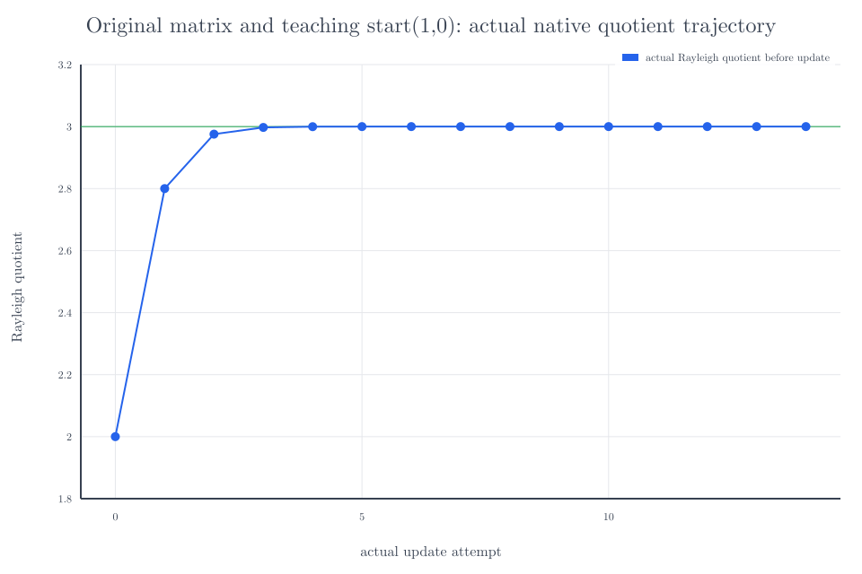
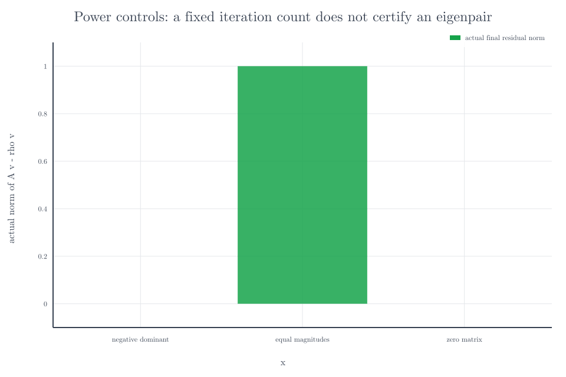
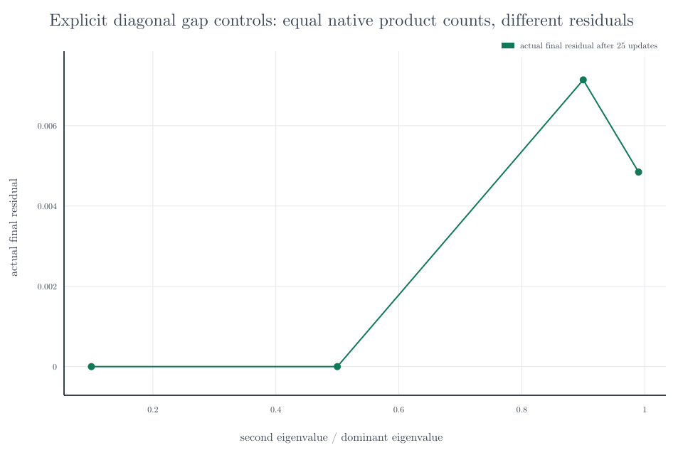

Power iteration: actual matrix products, normalization and residuals
Abstract
The original two-by-two matrix has eigenvalues3 and1. Multiplication scales the corresponding components differently; normalization keeps an iterate bounded. A native explicit-start overload now captures each actual matrix product and its normalization, so the plotted quotient trajectory is the library run itself. The original seeded entry point remains separate from the teaching start(1,0). Small controlled matrices expose spectral-gap, sign and stopping behavior without introducing an unrelated dataset.
Mechanism and mathematical scope
A tiny actual producing history
The table and native concept diagram read the same producing execution. Every block below is a complete editable C++ program.
#include <dm/dm.hpp>
int main() {
namespace a = dm::algorithms;
namespace g = dm::graphics;
std::filesystem::create_directories("build");
auto t = a::power_iteration_trace({{2, 1}, {1, 2}}, {1, 0}, 2);
std::print("\n| actual attempt | before | actual matrix product | product norm | Rayleigh before | " "residual before | accepted |\n| ---: | --- | --- | ---: | ---: | ---: | --- |\n");
for (auto &s : t.steps)
std::print("| {} | `{}` | `{}` | {} | {} | {} | {} |\n", s.iteration,
s.before, s.product, s.product_norm, s.rayleigh_before,
s.residual_before, s.accepted);
g::Diagram d;
d.node("n0", {0, 0}, std::format("Actual initial vector\n{}", t.initial));
d.node("n1", {10, 0},
std::format("Actual first matrix product\n{}", t.steps[0].product));
d.node("n2", {20, 0},
std::format("Actual first normalized iterate\n{}", t.steps[0].after));
d.edge("n0", "n1").edge("n1", "n2");
d.save_svg("build/power_iteration_tiny.svg");
}| actual attempt | before | actual matrix product | product norm | Rayleigh before | residual before | accepted |
|---|---|---|---|---|---|---|
| 0 | [1, 0] | [2, 1] | 2.23606797749979 | 2 | 1 | true |
| 1 | [0.8944271909999159, 0.4472135954999579] | [2.23606797749979, 1.7888543819998317] | 2.863564212655271 | 2.8 | 0.5999999999999999 | true |

The retained original experiment
#include <dm/dm.hpp>
int main() {
namespace a = dm::algorithms;
namespace g = dm::graphics;
std::filesystem::create_directories("build");
const std::vector<std::vector<double>> matrix{{2, 1}, {1, 2}};
auto seeded = a::power_iteration(matrix);
auto t = a::power_iteration_trace(matrix, {1, 0}, 15);
std::print("Original seeded result: value {}, vector {}. Teaching explicit-start result: value {}, " "residual {}.\n",
seeded.value, seeded.vector, t.run.pair.value,
t.run.residual_norm);
std::vector<double> x, y;
std::print("\n| actual attempt | actual before-iterate quotient | actual before residual |\n| ---: | " "---: | ---: |\n");
for (auto &s : t.steps) {
x.push_back(s.iteration);
y.push_back(s.rayleigh_before);
std::print("| {} | {} | {} |\n", s.iteration, s.rayleigh_before,
s.residual_before);
}
auto p = g::RPlot::create();
p.lines(x, y, "actual Rayleigh quotient before update", {37, 99, 235}).points(x, y, {37, 99, 235}, 5).abline_h(3, {22, 163, 74}).title("Original matrix and teaching start(1,0): actual native quotient trajectory").x_label("actual update attempt").y_label("Rayleigh quotient").y_limits(1.8, 3.2);
p.save_svg("build/power_iteration_original.svg");
}Original seeded result: value 2.9999999999999996, vector [0.7071067811865475, 0.7071067811865475]. Teaching explicit-start result: value 2.9999999999999902, residual 1.3938343879818948e-07.
| actual attempt | actual before-iterate quotient | actual before residual |
|---|---|---|
| 0 | 2 | 1 |
| 1 | 2.8 | 0.5999999999999999 |
| 2 | 2.975609756097561 | 0.2195121951219512 |
| 3 | 2.997260273972603 | 0.07397260273972645 |
| 4 | 2.9996952148735145 | 0.024687595245351822 |
| 5 | 2.9999661303979686 | 0.00823031329381875 |
| 6 | 2.9999962366542343 | 0.0027434790626259895 |
| 7 | 2.999999581849771 | 0.0009144945504575198 |
| 8 | 2.999999953538855 | 0.0003048315734701842 |
| 9 | 2.9999999948376512 | 0.00010161052658826595 |
| 10 | 2.999999999426406 | 3.387017560706737e-05 |
| 11 | 2.999999999936267 | 1.1290058538750965e-05 |
| 12 | 2.9999999999929186 | 3.7633528463016937e-06 |
| 13 | 2.999999999999213 | 1.2544509488699305e-06 |
| 14 | 2.9999999999999125 | 4.1815031639457643e-07 |

Explicit controls
#include <dm/dm.hpp>
int main() {
namespace a = dm::algorithms;
namespace g = dm::graphics;
std::filesystem::create_directories("build");
std::vector<std::vector<std::vector<double>> > matrices{{{-3, 0}, {0, 1}},
{{1, 0}, {0, -1}},
{{0, 0}, {0, 0}}};
std::vector<std::string> labels{"negative dominant", "equal magnitudes",
"zero matrix"};
std::vector<double> v;
std::print("\n| fixture | actual final Rayleigh value | final residual norm | accepted updates | " "tiny-product stop |\n| --- | ---: | ---: | ---: | --- |\n");
for (std::size_t i = 0; i < matrices.size(); ++i) {
auto r = a::power_iteration_from(matrices[i], {1, 1}, 25);
v.push_back(r.residual_norm);
std::print("| {} | {} | {} | {} | {} |\n", labels[i], r.pair.value,
r.residual_norm, r.accepted, r.tiny_product);
}
bool ragged = false;
try {
a::power_iteration({{1, 2}, {3}}, 1);
} catch (const std::invalid_argument &) {
ragged = true;
}
std::print("Complete ragged-matrix guard: {}.\n", ragged);
auto p = g::RPlot::barplot(v, labels, "actual final residual norm");
p.title("Power controls: a fixed iteration count does not certify an eigenpair").y_label("actual norm of A v - rho v");
p.save_svg("build/power_iteration_controls.svg");
}| fixture | actual final Rayleigh value | final residual norm | accepted updates | tiny-product stop |
|---|---|---|---|---|
| negative dominant | -3 | 4.720941548629534e-12 | 25 | false |
| equal magnitudes | 0 | 1 | 25 | false |
| zero matrix | 0 | 0 | 0 | true |
Complete ragged-matrix guard: true.

Actual selected work and sensitivity
#include <dm/dm.hpp>
int main() {
namespace a = dm::algorithms;
namespace g = dm::graphics;
std::filesystem::create_directories("build");
std::vector<double> x, y;
std::print("\n| secondary eigenvalue | attempted updates | actual dense products | actual scalar " "product terms | final residual |\n| ---: | ---: | ---: | ---: | ---: |\n");
for (double ratio : {.1, .5, .9, .99}) {
auto r = a::power_iteration_from({{1, 0}, {0, ratio}}, {1, 1}, 25);
x.push_back(ratio);
y.push_back(r.residual_norm);
std::print("| {} | {} | {} | {} | {} |\n", ratio, r.attempts,
r.matvec_calls, r.scalar_products, r.residual_norm);
}
auto p = g::RPlot::create();
p.lines(x, y, "actual final residual after 25 updates", {16, 122, 87}).points(x, y, {16, 122, 87}, 5).title("Explicit diagonal gap controls: equal native product counts, different residuals").x_label("second eigenvalue / dominant eigenvalue").y_label("actual final residual");
p.save_svg("build/power_iteration_work.svg");
}| secondary eigenvalue | attempted updates | actual dense products | actual scalar product terms | final residual |
|---|---|---|---|---|
| 0.1 | 25 | 26 | 104 | 9.000000000000008e-26 |
| 0.5 | 25 | 26 | 104 | 1.4901161193847643e-08 |
| 0.9 | 25 | 26 | 104 | 0.007142170734460809 |
| 0.99 | 25 | 26 | 104 | 0.004846220679940194 |

API and interpretation
The native sign-alignment convention avoids alternate displayed signs for negative dominant eigenvalues. A tiny product stops rather than inventing a normalized zero direction; it is distinct from a general convergence certificate. Nonsymmetric inputs are accepted as finite square matrices but the symmetric spectral-gap discussion is not promised for all of them. Counters include the final product used by the actual Rayleigh value and residual, but exclude dot-product and residual scalar work. Finite inputs can still overflow arithmetic and then fail explicitly.
Reusable producers, fixtures and histories live in the canonical C++ library. Captured records own their values and do not come from a separate report replay. Selected counters and record/scalar policies are specified at their API boundaries; they are not peak-byte or wall-time budgets. Synthetic structural inputs are controlled fixtures for these mechanisms.
References
Verified in the shared ten-document batch: 106 algorithm CTest cases plus90 graphics cases;21 directly instrumented algorithm ASan/UBSan cases and renderer SVG/PNG sanitizer probe;119 executable public examples;587/587 scoped definitions plus9 changed legend definitions;10 hovers;56287 independent records/278204 checks;frozen compatibility for all ten algorithm families;13 checkout/installed standalone headers and linked consumer;40 executed programs/40 reviewed figures with both exports. The legacy source is retired only after these gates pass.
Residuals across different matrices need not rank angular errors: as the second diagonal eigenvalue approaches1, the matrix approaches the identity and many directions have small residuals. The fixed-product-count panel therefore reports actual residuals without calling them a cross-matrix direction-error ranking.